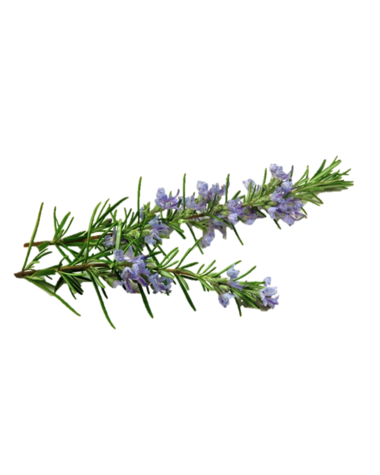

10 Hoja de Romero
10.1 (Rosmarinus officinalis L.)

Adrián Bouzas, María Tabernero*, Ana Ramírez de Molina, Guillermo Reglero Unidad de Innovación en Nutrición de Precisión.
Instituto Imdea Alimentación. CEI UAM+CSIC, Carretera de Cantoblanco 8. 28049, Madrid, España.
* Autor para correspondencia: maria.tabernero@imdea.org
10.2 Resumen
Rosmarinus officinalis L. (Lamiaceae) se conoce de forma popular como romero y puede ser empleada tanto fresca como seca, como extracto o aceite esencial. Los extractos de romero se suelen preparar haciendo el tratamiento a toda la planta, aunque puede hacerse de alguna parte específica de la misma como flores, brotes, semillas, hojas, tallos y/o corteza. Puede ser utilizada en diferentes campos, incluyendo las industrias cosmética, farmacéutica y alimentaria.
En la medicina tradicional, el romero se ha utilizado principalmente para el tratamiento del cólico renal y la dismenorrea, así como para aliviar síntomas relacionados con el tracto respiratorio y evitar la caída del cabello. Actualmente se utilizan en aromaterapia extractos de romero para reducir la ansiedad y aumentar el nivel de alerta.
Los extractos de romero se utilizan sobre todo por ser un antioxidante natural, aumentando la vida útil de alimentos perecederos. De hecho, la Unión Europea. a través de la Agencia de seguridad alimentaria (E.F.S.A. European Food Safety Authority), aprobó en el 2015, el uso de extractos de romero (E392) en la industria alimentaria como un antioxidante natural seguro y eficaz en la conservación de alimentos.
10.3 Características agronómicas
10.3.1 Taxonomía
Descrita por Carlos Linneo en su libro Species Plantarum 1:23. 1753, su etimología combina el término Rosmarinus que proviene del griego rhops (arbusto) myrinos (aromático) y el epíteto latino officinalis (de laboratorio). El nombre describe bien las características de esta planta, arbusto de hojas perenne, aromático, muy ramificado, ampliamente utilizado como condimento alimentario, así como en aplicaciones terapéuticas y farmacológicas.
| Reino | Plantae |
|---|---|
| División | Magnoliophyta |
| Clase | Magnoliopsida |
| Subclase | Asteridae |
| Orden | Lamiales |
| Familia | Lamiaceae |
| Subfamilia | Nepetoideae |
| Género | Rosmarinus |
| Especie | Rosmarinus officinalis |
10.3.2 Características botánicas
Arbusto de hasta 2 m. Tallos glabros, a veces pelosos. Hojas generalmente de tamaño variable en la misma rama, de lineares a lanceoladas, revolutas, sentadas, aproximadamente agudas, con haz glabra y envés peloso, frecuentemente lanoso, sobre todo el envés de hojas jóvenes, a veces de superficie rugosa. Inflorescencias en racimos axilares cortos, oscuros, con ejes lanosos hacia la base y en los nudos. Brácteas de hasta 3,5 mm ovadas y agudas. Flores con cáliz de 4 a 7 mm y 3 mm de anchura, acampanado con 12-16 nervios. Típicamente bilabiadas, con el labio superior con 3 dientes muy pequeños y labio inferior con 2 dientes con un reborde de borra blanca o púrpura. Corola con lóbulos pelosos en su superficie externa de color violeta o blanco, con el lóbulo inferior fimbriado. Estambres exertos, con anteras formadas por una teca curvada hacia arriba. Estilo recurvado. Núculas ovoides, aplanadas.
10.3.3 Localización geográfica:
Especie exclusiva de la región mediterránea y el Cáucaso, que ha sido cultivada desde la antigüedad como ornamental por todo el mundo. Buena planta melífera, da lugar a mieles específicas. Actualmente se cultiva en la región mediterránea occidental, por el norte hasta las islas del Adriático, por el sur hasta Libia; crece de manera asilvestrada en Crimea, el Cáucaso, Chipre, Creta, región macaronésica, Chile y otras regiones de Sudamérica y América Central. Presente en casi toda la Península Ibérica, exceptuando las provincias más húmedas y frías. ** (REFERENCIA: J.L: Rosúa in Anales Jard.Bot Madrid 37: 587-595 (1980). **
Figura 10.1: Figura 10.1 Características botánicas de Rosmarinus officinalis (Köhler–s Medizinal-Pflanzen-258)
10.3.4 Producción comercial:
El uso de extractos de éste va en aumento, no sólo para proporcionar sabor a las comidas, sino también como alternativa a los antioxidantes sintéticos en los alimentos procesados. La agencia europea de seguridad alimentaria (EFSA) ha evaluado positivamente la seguridad en el uso de extractos de romero como aditivo alimentario antioxidante, incluyéndolo en el listado de aditivos autorizados con el número E 392 (Annexes II and III to Regulation (EC) No 1333/2008 (EFSA, 2008). Es probable que, por este motivo, la demanda de extracto de romero se haya incrementado y por tanto el cultivo de esta planta también. Las plantas de romero pueden crecer en terrenos bien drenados y pueden aguantar un pH de 5,5 a 8. Sin embargo, el mejor rendimiento se obtiene en suelos fértiles arenosos y arcillosos con un pH cercano a 7 y excelente drenaje. El romero requiere al menos de 6 a 8 horas de exposición diaria al sol y se prefiere climas cálidos y moderadamente secos para su cultivo. Como se ha indicado, la planta es originaria de países mediterráneos, donde las temperaturas medias son de 20 a 30 °C, comunes durante la primavera y principios del verano. Las temperaturas del suelo superiores a 18 °C favorecen el crecimiento y la regeneración después de la cosecha. Sin embargo, la planta es resistente y también puede tolerar temperaturas más bajas.
10.3.5 Plagas y enfermedades
El aceite generado por el romero tiene como objetivo la defensa de la planta frente a parásitos y plagas. Por ese motivo es comúnmente cultivado junto con otras especies susceptibles de ser atacadas por plagas. Aun así, las raíces de la planta son sensibles al exceso de humedad y susceptibles a ser atacadas por hongos como Rhizoctonia y Alternaria, produciendo la podredumbre de la raíz y la muerte de la planta. En cuanto a plagas, el romero es susceptible a Icerya purchasi y de Tetranychus urticae.
10.4 Características nutricionales
| Composición | Cantidad (gr) | CDR (%) |
|---|---|---|
| Kcalorías | 345.0 | 18 % |
| Carbohidratos | 46.4 | 14.9 % |
| Proteínas | 5.0 | 10.5 % |
| Fibra | 24.1 | 80.3 % |
| Grasas | 15.2 | 28.6 % |
| Minerales | Cantidad (mg) | CDR (%) |
|---|---|---|
| Sodio | 50.0 | 3.1 % |
| Calcio | 0.0 | 0 % |
| Hierro | 28.9 | 361.3 % |
| Magnesio | 0.0 | 0 % |
| Fósforo | 50.0 | 7.1 % |
| Potasio | 550.0 | 27.5 % |
| Vitaminas | Cantidad (mg) | CDR (%) |
|---|---|---|
| Vitamina A | 0.31 | 34.8 % |
| Vitamina B1 | 0.50 | 41.7 % |
| Vitamina B2 | 0.00 | 0 % |
| Vitamina B3 | 1.00 | 0 % |
| Vitamina B12 | 0.00 | 0 % |
| Vitamina C | 50.00 | 55.6 % |
10.4.1 Propiedades funcionales
Las plantas contienen cientos de fitoquímicos (Cocan et al., 2017; Mouhid et al., 2017), compuestos bioactivos que se encuentran en pequeñas cantidades y que no son considerados nutrientes, pero si presentan algún efecto beneficioso para la salud.
En la medicina tradicional (Andrade et al., 2018; Avila-Sosa et al., 2011), las hojas de romero se han utilizado en función de sus actividades antibacterianas, como carminativo y como analgésico en músculos y articulaciones. Además, los aceites esenciales y extractos de romero obtenidos de las flores y las hojas se utilizan para tratar heridas menores, erupciones cutáneas, dolor de cabeza, dispepsia, problemas de circulación, pero también como expectorante, diurético y antiespasmódico en el cólico renal.
En la planta se han reportado diversos compuestos químicos, los cuales han sido agrupados de manera general por diversos autores en ácidos fenólicos, flavonoides, aceite esencial, ácidos triterpénicos y alcoholes triterpénicos (Cocan et al., 2017).
Figura 10.2: Figura 10.2 Estructura química de los tres compuestos principales presentes en el romero. (A) Ácido carnósico. (B) Carnosol. (C) Ácido rosmarínico.
10.4.2 Obtención de extractos
| Parameter | Unit | Dried Leaves | Extract D74 | Extract F62 | Extract AR | Extract ARD | Extract RES |
|---|---|---|---|---|---|---|---|
| Phenolic diterpenes | |||||||
| Carnosic acid | %w/w | 9.7 | 8.7 | 9.16 | 7.49 | 7.6 | 6.9 |
| Carnosol | %w/w | 0.3 | 1.3 | 0.84 | 2.51 | 2.4 | 3.1 |
| Carnosol + carnosic acid | %w/w | 10 | 10 | 10 | 10 | 10 | 10 |
| Triterpenes | |||||||
| Betulin | mg/g | <4.76 | 6.0 | 5.6 | 8.45 | 9.46 | 6.79 |
| Amyrin | mg/g | <0.5 | 0.034 | 0.2 | 0.16 | 0.23 | 0.36 |
| Triterpenic acids | |||||||
| Betulinic acid | mg/g | 65.2 | 48.0 | 46.9 | 56.0 | 64.5 | 35.1 |
| Sum oleanolic + ursolic acid | mg/g | 148.1 | 48.5 | 100.5 | 119.8 | 164.5 | 60 |
| Organic acids | |||||||
| Citric acid | mg/g | <0.5 | <0.034 | 0.2 | <0.1 | <0.11 | <0.05 |
| Malic acid | mg/g | <0.5 | <0.034 | 0.2 | <0.1 | <0.11 | <0.05 |
| Volatiles 1.8-Cineole | mg/g | 56.1 | 0.08 | 1.70 | 1.32 | 0.053 | 0.03 |
| Camphor | mg/g | 25.2 | 0.22 | 2.39 | 2.08 | 0.12 | 0.02 |
| Borneol | mg/g | 10.0 | 0.09 | 0.96 | 0.84 | 0.04 | 0.01 |
| Verbenone | mg/g | 2.24 | 0.63 | 0.27 | 0.34 | 0.39 | 0.02 |
| Bonyl acetate | mg/g | 1.00 | 0.07 | 0.29 | 0.27 | 0.32 | 0.01 |
| Antioxidant / Volatiles | mg/g | 0.1 | 10 | 1.8 | _ | 11 | 111 |
| Ratio: | |||||||
| Flavonoids | |||||||
| Genkwanin | mg/kg | 2.9 | 0.65 | 1.60 | 2.30 | 3.66 | 2.1 |
| Tannins | |||||||
| Expressed as gallotannin | mg/g | 177.6 | <0.5 | <0.5 | 70.7 | 99.0 | <0.5 |
| Polyphenols Expressed as gallic acid | mg/g | 262.9 | 0.65 | 1.12 | 99.5 | 115.5 | 1.6 |
| Polysaccharides | |||||||
| Expressed as starch | mg/g | 104.8 | <0.7 | <2 | 9.3 | 8.1 | <1 |
| Protein Total nitrogen x 6.25 | % | 23.3 | <0.03 | <0.1 | 0.57 | 0.86 | <0.05 |
| Lipophilic substances | |||||||
| Hexane-extractable matter | % | 43.3 | 16.3 | 24.7 | 20.84 | 24.6 | 21.0 |
| Anions | |||||||
| Fluoride | mg/kg | <47 | <3.4 | <5 | <10 | <12 | <5 |
| Chloride | mg/kg | 3000 | <6.8 | <10 | 2904 | 3612 | <10 |
| Bromide | mg/kg | <50 | <3.4 | <5 | <10 | <12 | <5 |
| Nitrate | mg/kg | <50 | <3.4 | <250 | <250 | 269 | <5 |
| Phosphate | mg/kg | 1809 | <6.8 | 21755* | 107 | 140 | <10 |
| Sulfate | mg/kg | 3571 | <3.4 | <50 | 451 | 613 | <5 |
| Cations | |||||||
| Cadmium | mg/kg | <0.23 | <0.02 | <0.03 | <0.05 | <0.05 | <0.03 |
| Chromium | mg/kg | 4.76 | 0.10 | 0.49 | 0.57 | 0.74 | 0.33 |
| Copper | mg/kg | 22.4 | <0.03 | 0.15 | 1.07 | 1.2 | 1.33 |
| Nickel | mg/kg | 5.2 | <0.03 | 0.13 | 0.37 | 0.48 | 0.14 |
| Lead | mg/kg | 2.90 | 0.09 | 0.03 | 0.13 | 0.15 | 0.18 |
| Mercury | mg/kg | <0.24 | <0.02 | <0.02 | <0.05 | <0.05 | <0.03 |
| Zinc | mg/kg | 90 | 2.93 | 1.01 | 6.64 | 8.39 | 1.84 |
| Arsenic | mg/kg | 1.14 | <0.034 | 0.05 | 0.25 | 0.25 | 0.32 |
Extracto de romero F62: se produce a partir de hojas secas de romero mediante extracción con acetona, filtración y evaporación del disolvente, seguido de secado por pulverización y tamizado, obteniendo un polvo verde fino. Estandarizado en vehículos alimentarios con un contenido en carnosol más carnósico de aproximadamente 10%.
Extracto de romero D74 - CO2 supercrítico: las hojas secas del romero se extraen mediante CO2 supercrítico. Durante la extracción, las sustancias solubles en CO2 se disuelven y la fracción obtenida se precipita. En una segunda etapa, el extracto crudo se desodoriza mediante CO2 supercrítico para definir el contenido de aceite esencial y para garantizar una concentración definida de los compuestos antioxidantes, carnosol y ácido carnósico. Finalmente, el extracto desodorizado se homogeneiza y se mezcla con vehículos alimentarios para convertir el extracto en un polvo o aceite líquido. Su contenido de carnosol más ácido carnósico es de aproximadamente 30%.
Extracto AR de especias en polvo - etanol: se prepara a partir de un extracto etanólico parcialmente desodorizado de romero. Este extracto contiene entre 7 y 10% de carnosol más ácido carnósico.
Extracto ARD de especias - etanol/desodorizado: se prepara a partir de un extracto etanólico desodorizado disuelto en vehículos adecuados y semipurificado por destilación. Contiene aproximadamente 5-7% de carnosol más ácido carnósico.
Extracto RES de romero - hexano y etanol: este producto es un extracto de romero decolorado y desodorizado obtenido mediante una extracción en dos etapas con hexano y etanol seguido de tratamiento con carbón activo y finalmente secado por pulverización. El contenido de carnosol más ácido carnósico en este extracto es 14.9%.
10.4.3 Propiedades terapéuticas y farmacológicas
Diferentes estudios vienen reportando las diferentes actividades que este extracto de romero puede aportar, demostrando los siguientes efectos: antibacteriano, antimicótico, antitumoral, antimutagénico, antioxidante, modulador del estrés oxidativo, antiinflamatorio, neuroprotector, antineoplásico y cardioprotector (Andrade et al., 2018; Neves et al., 2018).
| Efecto | Forma de utilización | Referencias |
|---|---|---|
| Actividad antibacteriana | Aceite esencial | Miresmailli 2006, Oluwatuyi et al. 2006, Rozman & Jerzek 2009 |
| Extractos etanólicos y acuosos | Barni et al. 2009 | |
| Actividad antiviral | Extractos hidroetanólicos | Nolkemper et al. 2006, 2008 |
| Actividad antiparasitaria | Aceite esencial | Abe et al. 2002 |
| Actividad antioxidante | Extracto acuoso | Genena et al. 2008 |
| Actividad en el sistema nervioso central | ||
| Estimulador | Aceite esencial | Tsuji et al. 2008, Miranda & Huajuca 2004 |
| Extracto acuoso | Burnett et al. 2004, Martínez et al. 2004 | |
| Mejorador de memoria | Extracto acuoso | Peng et al. 2007 |
| Liberación de dopamina | Extracto de hojas | Sozio et al. 2008 |
| Captación de monoaminas, citoprotectores a nivel de la membrana (eritrocitos) | Aceite esencial | Gholamreza & Mohammad 2005 |
| Activación neuronal | Extracto acuoso | Rau et al. 2006 |
| Inhibición de neurotransmisores | Extractos hidroetanólicos | Waggas & Balawi 2008 |
| Aceite esencial | Apostolidis et al. 2006 | |
| Acción antiinflamatoria | Aceite esencial | Asada 1999 |
| Acción diurética | Extracto acuoso | Martínez et al. 2004 |
| Extractos hidroetanólicos | Haloui & Lovedec 2000 | |
| Propiedades a nivel celular | ||
| Homeostasis celular | Extractos hidroetanólicos | Bakirel et al. 2008 |
| Regulación de ácidos grasos | Extracto acuoso | Bustanji & Issa 2010 |
| Crecimiento celular | Aceite esencial | Cantrell et al. 2005 |
| Aumenta la oxidación microsomal en hígado | Extracto acuoso | Zhu et al. 1998 |
| Cólicos menstruales | Aceite esencial | Miresmailli 2006 |
| Anticonceptivo | Extracto de hojas | González-Trujano et al. 2006 |
| Prevención cardiovascular | Aceite esencial | Islamcevic 2007 |
| Efecto dermoprotector | Hojas de romero | Fuchs et al. 2005 |
| Acción en el sistema gastrointestinal | ||
| Reducción de lesión ulcerosa | Extractos hidroetanólicos | Correa et al. 2000 |
| Genena et al., 2008; Burnett et al., 2004; Peng et al., 2007a; Pinnen et al., 2007; Asada, 1999; ABE et al., 2002) | ||
| Bustanji et al., n.d.; Waggas and Balawi, 2008; Apostolidis et al., n.d.; Karimi et al., n.d.; Fuchs et al., 2005; | ||
| Miresmailli et al., 2006; González-Trujano, 2006; Zhu, 1998; BARNI, n.d.; Haloui et al., 2000; Bakırel et al., 2008; | ||
| (Cantrell et al., 2005; Potrich et al., 2010; Nolkemper et al., 2006; Rau et al., 2006; Schnitzler et al., 2008; |
10.4.4 Propiedades antitumorales
Como se ha descrito anteriormente, el romero es capaz de ejercer una actividad antioxidante e inhibir con ella la genotoxicidad, y el efecto protector contra carcinógenos o agentes tóxicos.
La actividad antioxidante del romero, ha sido atribuida a su contenido fenólico: ácido carnósico, carnosol y metilcarnosato (compuestos diterpénicos), y a los ácidos rosmarínico y cafeico (ácidos fenólicos). Estos compuestos están clasificados como polifenoles, capaces de regular el crecimiento y la diferenciación celular, interfiriendo en el desarrollo y la progresión tumoral (Andrade et al., 2018; Cocan et al., 2017).
| Referencia | Extracto de romero | Tipo de cáncer | Modelo experimental | Efecto |
|---|---|---|---|---|
| (Huang et al., 1994) | Metanólico (3-5% carnosol y 16-20% ácido ursólico) | Piel | Ratón. Iniciación del tumor por BαP o DMBA y promoción por TPA | Inhibe la iniciación tumoral por BαP y por DMBA, y la promoción por TPA. Carnosol y ácido ursólico individualmente también inhiben la promoción por TPA, pero el efecto del extracto es mayor |
| (Singletary et al., 1996) | (60% p/p aceite de algodón y 40% p/p extracto de romero) | Mama | Rata. Tumor inducido por DMBA | Vía oral: disminuye los aductos DMBA-ADN. Vía intraperitoneal: disminuye los aductos DMBA-ADN y la incidencia tumoral, y aumenta la actividad GST y QR (efectos atribuidos al carnosol) |
| (Plouzek et al., 1999) | Metanólico (7,5% ácido carnósico y 7,5% carnosol) | Mama | Celular (MCF-7 que sobre-expresan glicoproteína P) | Incrementa la acumulación intracelular y el efecto antitumoral de doxorrubicina y vinblastina (conocidos sustratos de la glicoproteína P). Ni el carnosol, ni el ácido carnósico, ni el ácido rosmarínico individualmente parecen ser responsables de este efecto |
| (Slamenova et al., 2002) | Etanólico, comercial: Megafyt, Republica Checa | Colon | Celular (CaCo-2) | Reduce el daño oxidativo al ADN producido por peróxido de hidrógeno y Azul de Metileno |
| (Sancheti y Goyal, 2006) | Acuoso | Piel | Ratón. Iniciación del tumor por DMBA y promoción por aceite de crotón | Disminuye la incidencia tumoral tras su administración oral (1g/Kg/día) |
| (Sharabani et al., 2006) | Etanólico comercial: de LycoRed Natural Products Industries, Israel (30,62% ácido carnósico y 11,86% carnosol | Leucemia | Celular (WEHI-3B D) Ratón | Efecto sinérgico en la diferenciación inducida por 1α,25D3 y su análogo Ro25-4020, acompañado de parada del ciclo celular en fase G0+G1. Efecto atribuido al carnósico Potencia el efecto de Ro25-4020 sin inducir hipercalcemia tras su administración oral en la dieta |
| (Cheung y Tai, 2007) | Etanólico | Mama (ER+) Mama (ER-) Leucemia | Celular (MCF-7) Celular (MDA-MB-468 Celular (HL60, K562) | Anti-proliferativo. Sensibilidad celular: HL60 > MDA-MB-468 > K652 > MCF-7 |
| (Peng et al., 2007) | Supercrítico (componentes bioactivos mayoritarios: ácido rosmarínico, carnosol, ácido carnósico, ácido 12-metoxicarnósico y metilcarnosato | Hígado | Celular (Hep 3B) | Inhibe la viabilidad celular y sobre-expresa el factor de necrosis tumoral alfa (TNFα) |
| (Shabtay et al., 2008) | Etanólico, comercial: de LycoRed Natural Products Industries, Israel (33,9% ácido carnósico y 5,16% carnosol) | Leucemia | Celular (WEHI-3B D) Ratones, a los que se inyectan vía intravenosa células WEHI-3B-D | Incrementa el efecto diferenciador y anti- proliferativo de 19-nor-Gemini y de 1α,25D3. Efecto atribuido al ácido carnósico Efecto sinérgico en la supervivencia tras su administración en la dieta en combinación con 19- nor-Gemini i.p. |
| (Yesil-Celiktas et al., 2010) | Metanólicos y supercríticos | Pulmón Próstata Hígado Leucemia Mama (ER+) Mama (ER-) | Celular (NCI-H82) Celular (DU-145 y PC-3) Celular (Hep-3B) Celular (K-562) Celular (MCF-7) Celular (MDA-MB-231) | Anti-proliferativo. Efecto atribuido al ácido carnósico. Los extractos supercríticos son más activos que los metanólicos |
| (Mothana et al., 2011) | Acuoso y metanólico | Vejiga Mama (ER+) | Celular (5637) Celular (MCF-7) | Citotóxico. Más activo el extracto metanólico que el acuoso |
| (Yi y Wetzstein, 2011) | Metanólico | Colon | Celular (SW480) | Anti-proliferativo |
| (Berrington y Lall, 2012) | Acetónicos | Útero | Celular (HeLa) | Anti-proliferativo |
| (Ibañez et al., 2012a) | Supercrítico (15,16% p/p ácido carnósico y 22,64% p/p carnosol) | Colon | Celular (HT-29) | Alteración del ciclo celular: parada en G2/M, reducción de G1, y pequeña acumulación en sub-G1 (efecto pro-apoptótico) |
| (Ibañez et al., 2012b) | Supercrítico | Colon | Celular (HT-29) | Modificación de la expresión de genes asociados al desarrollo, crecimiento, proliferación, ciclo y muerte celular |
| (Tai et al., 2012) | Acuoso y etanólico | Ovario | Celular (A2780) | Anti-proliferativo y apoptótico. Efecto sinérgico en combinación con cisplatino |
| (Wang et al., 2012) | Aceite esencial | Ovario Hígado | Celular (SK-OV-3 y HO-8910) Celular (Bel- 7402) | Citotóxico |
| (Kontogianni et al., 2013) | Extracción Soxhlet con hexano y etilacetato (componentes mayoritarios: ácido ursólico y ácido carnósico) | Insulinoma | Celular (RINm5F) | Citotóxico |
| (Valdés et al., 2013) | Supercrítico | Colon | Celular (SW480 y HT-29) | Anti-proliferativo y antioxidante (modulación de genes de enzimas de fase II) |
| Slameňová et al., 2002; Tai et al., 2012; Valdés et al., 2013; Wang et al., 2012; Yesil-Celiktas et al., 2010; Yi and Wetzstein, 2011) | ||||
| Sancheti and Goyal, 2006; Shabtay et al., 2008; Sharabani et al., 2006; Singletary et al., 1996; | ||||
| Ibáñez et al., 2012a, 2012b; Kontogianni et al., 2013; Mothana et al., 2011; Peng et al., 2007b; | ||||
| (Tesis doctoral, n.d.; Berrington and Lall, 2012; Cheung and Tai, 2007; Ciolino et al., 1999; Huang et al., n.d.; |
10.5 Experiencia y contribución del grupo de investigación al estado del arte
Los integrantes del grupo de investigación tienen amplia experiencia en el estudio de las propiedades físico-químicas y fisiológicas del romero. Cuentan con numerosas revisiones (González-Vallinas et al., 2015), así como estudios en la metodología de extracción (Anadón et al., 2008; Ibañez et al., 2003, 2000; Ramírez et al., 2004; Santoyo et al., 2005; Soler-Rivas et al., 2010; Vicente et al., 2013, 2012) y caracterización de compuestos (Ibañez et al., 2000; Ramírez et al., 2004; Santoyo et al., 2005; Soler-Rivas et al., 2010; Vicente et al., 2013). También han evaluado la biodisponibilidad y bioseguridad de estos extractos (Anadón et al., 2013, 2008). Por último, la aplicación de estos extractos en la nutrición de precisión y su uso como coadyuvante en los tratamientos para enfermos de cáncer (González-Vallinas et al., 2015, 2014b, 2014a, 2013; Posadas et al., 2009) han fundamentado la creación de una línea de investigación propia en Imdea Alimentación. Recientemente se han publicado dos patentes basadas en las investigaciones de esta línea:
ES24087301B1. Supercritical Rosemary extract for cancer treatment
P201630560. Uso de combinaciones sinérgicas de lípidos portadores bioactivos y otros principios bioactivos para el desarrollo de fórmulas destinadas a la nutrición dirigida a pacientes oncológicos
10.6 Bibliografía
ABE, F., YAMAUCHI, T., NAGAO, T., KINJO, J., OKABE, H., HIGO, H., AKAHANE, H., 2002. Ursolic Acid as a Trypanocidal Constituent in Rosemary 3.
Anadón, A., Martínez, M.A., Ares, I., Castellano, V., Martínez-Larrañaga, M.R., Corzo, N., Olano, A., Montilla, A., Recio, I., Martínez-Maqueda, D., Miralles, B., Fornari, T., García-Risco, M.R., Gonzalez, M., Reglero, G., 2013. Acute and Repeated Dose (28 Days) Oral Safety Studies of ALIBIRD in Rats. Journal of Food Protection 76, 1226–1239. https://doi.org/10.4315/0362-028X.JFP-13-032
Anadón, A., Martínez-Larrañaga, M.R., Martínez, M.A., Ares, I., García-Risco, M.R., Señoráns, F.J., Reglero, G., 2008. Acute Oral Safety Study of Rosemary Extracts in Rats. Journal of Food Protection 71, 790–795. https://doi.org/10.4315/0362-028X-71.4.790
Andrade, J.M., Faustino, C., Garcia, C., Ladeiras, D., Reis, C.P., Rijo, P., 2018. Rosmarinus officinalis L.: an update review of its phytochemistry and biological activity. Future Science OA 4, FSO283. https://doi.org/10.4155/fsoa-2017-0124
Apostolidis, E., Kwon, Y.-I., Shetty, K., n.d. Potential of cranberry-based herbal synergies for diabetes and hypertension management 9.
Asada, K., 1999. THE WATER-WATER CYCLE IN CHLOROPLASTS: Scavenging of Active Oxygens and Dissipation of Excess Photons. Annual Review of Plant Physiology and Plant Molecular Biology 50, 601–639. https://doi.org/10.1146/annurev.arplant.50.1.601
Avila-Sosa, R., Navarro-Cruz, A.R., Vera-López, O., Dávila-Márquez, R.M., Melgoza-Palma, N., Meza-Pluma, R., 2011. Romero (Rosmarinus officinalis L.): una revisión de sus usos no culinarios 14.
Bakırel, T., Bakırel, U., Keleş, O.Ü., Ülgen, S.G., Yardibi, H., 2008. In vivo assessment of antidiabetic and antioxidant activities of rosemary (Rosmarinus officinalis) in alloxan-diabetic rabbits. Journal of Ethnopharmacology 116, 64–73. https://doi.org/10.1016/j.jep.2007.10.039
BARNI, M.V., n.d. Estudio de la eficacia antibiótica de un extracto etanólico de Rosmarinus officinalis L. contra Staphylococcus aureus en dos modelos de infección en piel de ratón 5.
BEDCA web, n.d.
Berrington, D., Lall, N., 2012. Anticancer Activity of Certain Herbs and Spices on the Cervical Epithelial Carcinoma (HeLa) Cell Line. Evidence-Based Complementary and Alternative Medicine 2012, 1–11. https://doi.org/10.1155/2012/564927
Burnett, K.M., Solterbeck, L.A., Strapp, C.M., 2004. Scent and Mood State following an Anxiety-Provoking Task. Psychological Reports 95, 707–722. https://doi.org/10.2466/pr0.95.2.707-722
Bustanji, Y., Issa, A., Mohammad, M., Hudaib, M., Tawah, K., Alkhatib, H., Almasri, I., Al-Khalidi, B., n.d. Inhibition of hormone sensitive lipase and pancreatic lipase by Rosmarinus officinalis extract and selected phenolic constituents 8.
Cantrell, C.L., Richheimer, S.L., Nicholas, G.M., Schmidt, B.K., Bailey, D.T., 2005. s eco -Hinokiol, a New Abietane Diterpenoid from Rosmarinus officinalis. Journal of Natural Products 68, 98–100. https://doi.org/10.1021/np040154i
Cheung, S., Tai, J., 2007. Anti-proliferative and antioxidant properties of rosemary Rosmarinus officinalis. Oncology Reports. https://doi.org/10.3892/or.17.6.1525
Ciolino, H.., Clarke, R., Yeh, G.., Plouzek, C.., 1999. Inhibition of P-glycoprotein activity and reversal of multidrug resistance in vitro by rosemary extract. European Journal of Cancer 35, 1541–1545. https://doi.org/10.1016/S0959-8049(99)00180-X
Cocan, I., Alexa, E., Danciu, C., Radulov, I., Galuscan, A., Obistioiu, D., Morvay, A., Sumalan, R., Poiana, M., Pop, G., Dehelean, C., 2017. Phytochemical screening and biological activity of Lamiaceae family plant extracts. Experimental and Therapeutic Medicine. https://doi.org/10.3892/etm.2017.5640
European Food Safety Authority (EFSA), 2008. Use of rosemary extracts as a food additive - Scientific Opinion of the Panel on Food Additives, Flavourings, Processing Aids and Materials in Contact with Food: Use of rosemary extracts as a food additive - Scientific Opinion of the Panel on Food Additives, Flavourings, Processing Aids and Materials in Contact. EFSA Journal 6, 721. https://doi.org/10.2903/j.efsa.2008.721
Fuchs, S.M., Schliemann-Willers, S., Fischer, T.W., Elsner, P., 2005. Protective Effects of Different Marigold (Calendula officinalis L.) and Rosemary Cream Preparations against Sodium-Lauryl-Sulfate-Induced Irritant Contact Dermatitis. Skin Pharmacology and Physiology 18, 195–200. https://doi.org/10.1159/000085865
Genena, A.K., Hense, H., Smânia Junior, A., Souza, S.M. de, 2008. Rosemary (Rosmarinus officinalis): a study of the composition, antioxidant and antimicrobial activities of extracts obtained with supercritical carbon dioxide. Ciência e Tecnologia de Alimentos 28, 463–469. https://doi.org/10.1590/S0101-20612008000200030
González-Trujano, D.M.E., 2006. Detección y comparación del efecto antinociceptivo de Rosmarinus officinalis L. (romero) en el modelo PIFIR 6.
González-Vallinas, M., Molina, S., Vicente, G., de la Cueva, A., Vargas, T., Santoyo, S., García-Risco, M.R., Fornari, T., Reglero, G., Ramírez de Molina, A., 2013. Antitumor effect of 5-fluorouracil is enhanced by rosemary extract in both drug sensitive and resistant colon cancer cells. Pharmacological Research 72, 61–68. https://doi.org/10.1016/j.phrs.2013.03.010
González-Vallinas, M., Molina, S., Vicente, G., Sánchez-Martínez, R., Vargas, T., García-Risco, M.R., Fornari, T., Reglero, G., Ramírez de Molina, A., 2014a. Modulation of estrogen and epidermal growth factor receptors by rosemary extract in breast cancer cells: General. ELECTROPHORESIS 35, 1719–1727. https://doi.org/10.1002/elps.201400011
González-Vallinas, M., Molina, S., Vicente, G., Zarza, V., Martín-Hernández, R., García-Risco, M.R., Fornari, T., Reglero, G., de Molina, A.R., 2014b. Expression of MicroRNA-15b and the Glycosyltransferase GCNT3 Correlates with Antitumor Efficacy of Rosemary Diterpenes in Colon and Pancreatic Cancer. PLoS ONE 9, e98556. https://doi.org/10.1371/journal.pone.0098556
González-Vallinas, M., Reglero, G., Ramírez de Molina, A., 2015. Rosemary (Rosmarinus officinalis L.) Extract as a Potential Complementary Agent in Anticancer Therapy. Nutrition and Cancer 67, 1223–1231. https://doi.org/10.1080/01635581.2015.1082110
Haloui, M., Louedec, L., Michel, J.-B., Lyoussi, B., 2000. Experimental diuretic effects of Rosmarinus officinalis and Centaurium erythraea. Journal of Ethnopharmacology 71, 465–472. https://doi.org/10.1016/S0378-8741(00)00184-7
Huang, M.-T., Ho, C.-T., Wang, Z.Y., Ferraro, T., Lou, Y.-R., Stauber, K., Ma, W., n.d. Inhibition of Skin ilimorigenesis by Rosemary and Its Constituents Carnosol and 9.
Ibáñez, C., Simó, C., García-Cañas, V., Gómez-Martínez, Á., Ferragut, J.A., Cifuentes, A., 2012a. CE/LC-MS multiplatform for broad metabolomic analysis of dietary polyphenols effect on colon cancer cells proliferation: Liquid Phase Separations. ELECTROPHORESIS 33, 2328–2336. https://doi.org/10.1002/elps.201200143
Ibáñez, C., Valdés, A., García-Cañas, V., Simó, C., Celebier, M., Rocamora-Reverte, L., Gómez-Martínez, Á., Herrero, M., Castro-Puyana, M., Segura-Carretero, A., Ibáñez, E., Ferragut, J.A., Cifuentes, A., 2012b. Global Foodomics strategy to investigate the health benefits of dietary constituents. Journal of Chromatography A 1248, 139–153. https://doi.org/10.1016/j.chroma.2012.06.008
Ibañez, E., Cifuentes, A., Crego, A.L., Señoráns, F.J., Cavero, S., Reglero, G., 2000. Combined Use of Supercritical Fluid Extraction, Micellar Electrokinetic Chromatography, and Reverse Phase High Performance Liquid Chromatography for the Analysis of Antioxidants from Rosemary (Rosmarinus officinalis L.). Journal of Agricultural and Food Chemistry 48, 4060–4065. https://doi.org/10.1021/jf0002692
Ibañez, E., Kubátová, A., Señoráns, F.J., Cavero, S., Reglero, G., Hawthorne, S.B., 2003. Subcritical Water Extraction of Antioxidant Compounds from Rosemary Plants. Journal of Agricultural and Food Chemistry 51, 375–382. https://doi.org/10.1021/jf025878j
Karimi, G., Hassanzadeh, M., Mehri, S., n.d. Protective Effect of Rosmarinus officinalis L. Essential Oil against Free Radical-Induced Erythrocyte Lysis 6.
Kontogianni, V.G., Tomic, G., Nikolic, I., Nerantzaki, A.A., Sayyad, N., Stosic-Grujicic, S., Stojanovic, I., Gerothanassis, I.P., Tzakos, A.G., 2013. Phytochemical profile of Rosmarinus officinalis and Salvia officinalis extracts and correlation to their antioxidant and anti-proliferative activity. Food Chemistry 136, 120–129. https://doi.org/10.1016/j.foodchem.2012.07.091
Miresmailli, S., Bradbury, R., Isman, M.B., 2006. Comparative toxicity of Rosmarinus officinalis L. essential oil and blends of its major constituents against Tetranychus urticae Koch (Acari: Tetranychidae) on two different host plants. Pest Management Science 62, 366–371. https://doi.org/10.1002/ps.1157
Mothana, R.A.A., Kriegisch, S., Harms, M., Wende, K., Lindequist, U., 2011. Assessment of selected Yemeni medicinal plants for their in vitro antimicrobial, anticancer, and antioxidant activities. Pharmaceutical Biology 49, 200–210. https://doi.org/10.3109/13880209.2010.512295
Mouhid, L., Corzo-Martínez, M., Torres, C., Vázquez, L., Reglero, G., Fornari, T., Ramírez de Molina, A., 2017. Improving In Vivo Efficacy of Bioactive Molecules: An Overview of Potentially Antitumor Phytochemicals and Currently Available Lipid-Based Delivery Systems. Journal of Oncology 2017, 1–34. https://doi.org/10.1155/2017/7351976
Neves, Josynaria Araújo, Neves, Josyanne Araújo, Oliveira, R. de C.M., 2018. Pharmacological and biotechnological advances with Rosmarinus officinalis L. Expert Opinion on Therapeutic Patents 28, 399–413. https://doi.org/10.1080/13543776.2018.1459570
Nolkemper, S., Reichling, J., Stintzing, F., Carle, R., Schnitzler, P., 2006. Antiviral Effect of Aqueous Extracts from Species of the Lamiaceae Family against Herpes simplex Virus Type 1 and Type 2 in vitro. Planta Medica 72, 1378–1382. https://doi.org/10.1055/s-2006-951719
Peng, C.-H., Su, J.-D., Chyau, C.-C., Sung, T.-Y., Ho, S.-S., Peng, C.-C., Peng, R.Y., 2007a. Supercritical Fluid Extracts of Rosemary Leaves Exhibit Potent Anti-Inflammation and Anti-Tumor Effects. Bioscience, Biotechnology, and Biochemistry 71, 2223–2232. https://doi.org/10.1271/bbb.70199
Peng, C.-H., Su, J.-D., Chyau, C.-C., Sung, T.-Y., Ho, S.-S., Peng, C.-C., Peng, R.Y., 2007b. Supercritical Fluid Extracts of Rosemary Leaves Exhibit Potent Anti-Inflammation and Anti-Tumor Effects. Bioscience, Biotechnology, and Biochemistry 71, 2223–2232. https://doi.org/10.1271/bbb.70199
Pinnen, F., Cacciatore, I., Cornacchia, C., Sozio, P., Iannitelli, A., Costa, M., Pecci, L., Nasuti, C., Cantalamessa, F., Di Stefano, A., 2007. Synthesis and Study of l -Dopa-Glutathione Codrugs as New Anti-Parkinson Agents with Free Radical Scavenging Properties. Journal of Medicinal Chemistry 50, 2506–2515. https://doi.org/10.1021/jm070037v
Posadas, S.J., Caz, V., Largo, C., De la Gándara, B., Matallanas, B., Reglero, G., De Miguel, E., 2009. Protective effect of supercritical fluid rosemary extract, Rosmarinus officinalis, on antioxidants of major organs of aged rats. Experimental Gerontology 44, 383–389. https://doi.org/10.1016/j.exger.2009.02.015
Potrich, F.B., Allemand, A., da Silva, L.M., dos Santos, A.C., Baggio, C.H., Freitas, C.S., Mendes, D.A.G.B., Andre, E., de Paula Werner, M.F., Marques, M.C.A., 2010. Antiulcerogenic activity of hydroalcoholic extract of Achillea millefolium L.: Involvement of the antioxidant system. Journal of Ethnopharmacology 130, 85–92. https://doi.org/10.1016/j.jep.2010.04.014
Ramírez, P., Señoráns, F.J., Ibañez, E., Reglero, G., 2004. Separation of rosemary antioxidant compounds by supercritical fluid chromatography on coated packed capillary columns. Journal of Chromatography A 1057, 241–245. https://doi.org/10.1016/j.chroma.2004.09.037
Rau, O., Wurglics, M., Paulke, A., Zitzkowski, J., Meindl, N., Bock, A., Dingermann, T., Abdel-Tawab, M., Schubert-Zsilavecz, M., 2006. Carnosic Acid and Carnosol, Phenolic Diterpene Compounds of the Labiate Herbs Rosemary and Sage, are Activators of the Human Peroxisome Proliferator-Activated Receptor Gamma. Planta Medica 72, 881–887. https://doi.org/10.1055/s-2006-946680
Sancheti, G., Goyal, P.K., 2006. Effect of rosmarinus officinalis in modulating 7,12-dimethylbenz(a)anthracene induced skin tumorigenesis in mice. Phytotherapy Research 20, 981–986. https://doi.org/10.1002/ptr.1989
Santoyo, S., Cavero, S., Jaime, L., Ibañez, E., Señoráns, F.J., Reglero, G., 2005. Chemical Composition and Antimicrobial Activity of Rosmarinus officinalis L. Essential Oil Obtained via Supercritical Fluid Extraction. Journal of Food Protection 68, 790–795. https://doi.org/10.4315/0362-028X-68.4.790
Schnitzler, P., Nolkemper, S., Stintzing, F.C., Reichling, J., 2008. Comparative in vitro study on the anti-herpetic effect of phytochemically characterized aqueous and ethanolic extracts of Salvia officinalis grown at two different locations. Phytomedicine 15, 62–70. https://doi.org/10.1016/j.phymed.2007.11.013
Shabtay, A., Sharabani, H., Barvish, Z., Kafka, M., Amichay, D., Levy, J., Sharoni, Y., Uskokovic, M.R., Studzinski, G.P., Danilenko, M., 2008. Synergistic Antileukemic Activity of Carnosic Acid-Rich Rosemary Extract and the 19-nor Gemini Vitamin D Analogue in a Mouse Model of Systemic Acute Myeloid Leukemia. Oncology 75, 203–214. https://doi.org/10.1159/000163849
Sharabani, H., Izumchenko, E., Wang, Q., Kreinin, R., Steiner, M., Barvish, Z., Kafka, M., Sharoni, Y., Levy, J., Uskokovic, M., Studzinski, G.P., Danilenko, M., 2006. Cooperative antitumor effects of vitamin D3 derivatives and rosemary preparations in a mouse model of myeloid leukemia. International Journal of Cancer 118, 3012–3021. https://doi.org/10.1002/ijc.21736
Singletary, K., MacDonald, C., Wallig, M., 1996. Inhibition by rosemary and carnosol of 7,12-dimethylbenz[a]anthracene (DMBA)-induced rat mammary tumorigenesis and in vivo DMBA-DNA adduct formation. Cancer Letters 104, 43–48. https://doi.org/10.1016/0304-3835(96)04227-9
Slameňová, D., Kubošková, K., Horváthová, E., Robichová, S., 2002. Rosemary-stimulated reduction of DNA strand breaks and FPG-sensitive sites in mammalian cells treated with H2O2 or visible light-excited Methylene Blue. Cancer Letters 177, 145–153. https://doi.org/10.1016/S0304-3835(01)00784-4
Soler-Rivas, C., Marín, F.R., Santoyo, S., García-Risco, M.R., Señoráns, F.J., Reglero, G., 2010. Testing and Enhancing the in Vitro Bioaccessibility and Bioavailability of Rosmarinus officinalis Extracts with a High Level of Antioxidant Abietanes. Journal of Agricultural and Food Chemistry 58, 1144–1152. https://doi.org/10.1021/jf902087q
Tai, J., Cheung, S., Wu, M., Hasman, D., 2012. Antiproliferation effect of Rosemary (Rosmarinus officinalis) on human ovarian cancer cells in vitro. Phytomedicine 19, 436–443. https://doi.org/10.1016/j.phymed.2011.12.012
Tesis Doctoral Margarita González-Vallinas Garrachón, Evaluación del extracto supercrítico de romero (rosmarinus officinalis l.) como agente antitumoral: bases genómicas de su potencial aplicación. UAM, Madrid. 2014
Valdés, A., García-Cañas, V., Rocamora-Reverte, L., Gómez-Martínez, Á., Ferragut, J.A., Cifuentes, A., 2013. Effect of rosemary polyphenols on human colon cancer cells: transcriptomic profiling and functional enrichment analysis. Genes & Nutrition 8, 43–60. https://doi.org/10.1007/s12263-012-0311-9
Vicente, G., García-Risco, M.R., Fornari, T., Reglero, G., 2013. Isolation of carsonic acid from rosemary extracts using semi-preparative supercritical fluid chromatography. Journal of Chromatography A 1286, 208–215. https://doi.org/10.1016/j.chroma.2013.02.044
Vicente, G., Mart|iacute;n, D., Garc|iacute;a-Risco, M.R., Fornari, T., Reglero, G., 2012. Supercritical carbon dioxide extraction of antioxidants from rosemary (Rosmarinus officinalis) leaves for use in edible vegetable oils. Journal of Oleo Science 61, 689–697. https://doi.org/10.5650/jos.61.689
Waggas, A.M., Balawi, A.E., 2008. Neurophysiological Study on Possible Protective Effect of Rosemary (Rosmarinus officinalis) Leaves Extract in Male Albino Rats Treated with Acrylamide 9.
Wang, W., Li, N., Luo, M., Zu, Y., Efferth, T., 2012. Antibacterial Activity and Anticancer Activity of Rosmarinus officinalis L. Essential Oil Compared to That of Its Main Components. Molecules 17, 2704–2713. https://doi.org/10.3390/molecules17032704
Yesil-Celiktas, O., Sevimli, C., Bedir, E., Vardar-Sukan, F., 2010. Inhibitory Effects of Rosemary Extracts, Carnosic Acid and Rosmarinic Acid on the Growth of Various Human Cancer Cell Lines. Plant Foods for Human Nutrition 65, 158–163. https://doi.org/10.1007/s11130-010-0166-4
Yi, W., Wetzstein, H.Y., 2011. Anti-tumorigenic activity of five culinary and medicinal herbs grown under greenhouse conditions and their combination effects. Journal of the Science of Food and Agriculture 91, 1849–1854. https://doi.org/10.1002/jsfa.4394
Zhu, B., 1998. Dietary administration of an extract from rosemary leaves enhances the liver microsomal metabolism of endogenous estrogens and decreases their uterotrophic action in CD-1 mice. Carcinogenesis 19, 1821–1827. https://doi.org/10.1093/carcin/19.10.1821